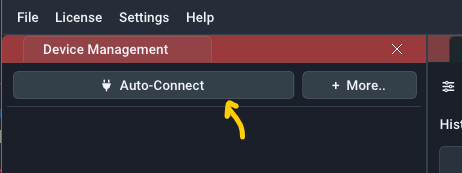

Erste Schritte#
Überblick#
Beim ersten Start der Software sehen Sie den folgenden Bildschirm:
- Geräteverwaltung: Dieses Panel verwaltet alle Geräteverbindungen. Sobald die Lizenzschlüssel eingegeben sind, können Sie die Schaltfläche
Auto-Connectverwenden, um eine Verbindung zu log.flow- oder IO.flow-Geräten herzustellen, die an den Computer angeschlossen sind. Für andere Gerätetypen können Sie die SchaltflächeMoreverwenden, um manuell eine Verbindung über einen COM-Port herzustellen. In diesem Fenster können Sie die Geräteparameter ändern und jeden vom Gerät bereitgestellten Kanal auswählen/bearbeiten. - Live-Graph-Panel: Dieses Feld zeigt entweder die von den angeschlossenen Geräten gestreamten Messwerte oder die Messwerte einer zuvor aufgezeichneten Datei an. Die X-Achse zeigt die Zeit seit der Messung des Wertes an. Wenn Live-Werte eingespeist werden, entspricht der Wert ganz rechts dem aktuellen Wert. Die Darstellung unterstützt mehrere Kanäle, die in verschiedenen Farben angezeigt werden. Es gibt bis zu drei Y-Achsen (links/rechts), um die Durchflussrate, das Volumen und die Analogwerte auf einer eigenen Achse darzustellen.
- Live-Wert-Panel: Dieses Feld zeigt die aktuellen Werte als Text/Zahl an.
- Aufzeichnungsfeld: In diesem Bereich werden alle laufenden und abgeschlossenen Aufzeichnungen aufgelistet. Sie können sie von hier aus öffnen (Doppelklick) und verwalten (Rechtsklick). Es ist normalerweise ausgeblendet, wenn keine Aufnahmen vorhanden sind.
Der erste Schritt nach dem Öffnen der Software ist in der Regel das Verbinden mit einem externen Datenerfassungsgerät. Verwenden Sie dazu die Auto-Connect und More Schaltflächen in der Geräteverwaltung. Wenn Sie diese Software zum ersten Mal verwenden, müssen Sie einen passenden Lizenzschlüssel eingeben. Dies wird im nächsten Kapitel erklärt.
Hilfe: Panel ist nicht sichtbar
Sie können Panels immer wieder sichtbar machen, indem Sie das Menü Settings in der oberen Menüleiste verwenden und das Fenster, das Sie wieder aktivieren möchten, ankreuzen.
Software-Aktivierung#
Das Aktivierungsverfahren hängt von dem Gerät ab, mit dem Sie die EasyGraph-Software erworben haben:
-
Wenn Sie die Software mit einem log.flow-Datenlogger verwenden, ist die Lizenz hardwaregebunden an das jeweilige log.flow-Gerät und die zu diesem Gerät passende Seriennummer muss eingegeben werden. Der gesamte Vorgang funktioniert ohne Internetverbindung.
-
Wenn Sie die Software mit einer anderen Hardware (z.B. IO.flow®, Auswerteeinheiten wie A341, A350 oder FU210) verwenden, muss eine Online-Lizenzaktivierung durchgeführt werden, um die Software nutzen zu können.
Log.flow-Aktivierung#
Das folgende Video zeigt, wie Sie den Seriennummernschlüssel eingeben, um die Software zu aktivieren. Es können mehrere Seriennummernschlüssel für verschiedene log.flow-Geräte gespeichert und verwaltet werden. Die Bindestriche ( - ) im Serienschlüssel müssen nicht eingegeben werden.
Wenn Sie mit der rechten Maustaste klicken, können Sie dem Schlüssel auch eine Bezeichnung hinzufügen, um sich zu merken, zu welchem Gerät er gehört. Alternativ können Sie hier z. B. Ihre Kundennummer eintragen, um sie später leicht wiederzufinden, wenn Sie die Software aktualisieren wollen.
Online-Aktivierung#
Hinweis: Nur online
Bei jedem Softwarestart benötigt die Software eine Internetverbindung, um die Gültigkeit des Lizenzschlüssels zu überprüfen.
Unterstützte Geräte: IO.flow® mit USB-Master, A341, A350, FU210
Nach dem Kauf erhalten Sie eine E-Mail mit dem Lizenzschlüssel. Nachdem Sie diesen Schlüssel in die Software eingegeben haben (siehe Video unten), können Sie sich mit allen unterstützten Gerätetypen verbinden.
Über das Gerätemenü in der oberen Leiste können Sie den Lizenzschlüssel auch bearbeiten oder vom Computer entfernen. Dies kann erforderlich sein, wenn Sie das Aktivierungslimit überschritten haben und es auf einem anderen PC aktivieren möchten.
Die erste Aufnahme#
Herstellen einer Verbindung#
Um eine Geräteverbindung herzustellen, vergewissern Sie sich, dass das Gerät richtig mit dem Computer verbunden und eingeschaltet ist. Hilfe dazu finden Sie in der gerätespezifischen Verbindungsanleitung.

Im Geräteverwaltungspanel verwenden Sie die Schaltfläche „Auto-Connect“, um den Verbindungsprozess zu starten, der vollautomatisch ablaufen sollte (mit Ausnahme der Option Display/FU, bei der ein COM-Port über die Schaltfläche More ausgewählt werden muss). Wenn eine Verbindung nicht hergestellt werden kann, haben Sie möglicherweise keinen Lizenzschlüssel eingegeben, wie im vorherigen Kapitel beschrieben.

Wenn die Verbindung hergestellt ist, wird sie der Geräteliste unterhalb der Schaltfläche „Auto-Connect“ hinzugefügt. Eine aktive Geräteverbindung wird durch den roten Geräteeintrag angezeigt. Die aktuell gemessenen Werte werden im Live value panel und im Live graph panel angezeigt.
Hilfe: Ich sehe nur Nullwerte
Vergewissern Sie sich, dass Sie Ihre Sensoren mit 24V versorgt haben und dass sie die richtigen Signalpegel (HTL) ausgeben. Wenn Sie log.flow verwenden, lesen Sie diesen Abschnitt, um weitere Informationen über die Stromversorgung Ihrer Sensoren zu erhalten.
Plot-Navigation#
Benutzen Sie Ihre Maus, um im Diagrammfenster zu navigieren. Sehen Sie sich dazu das folgende Video an: